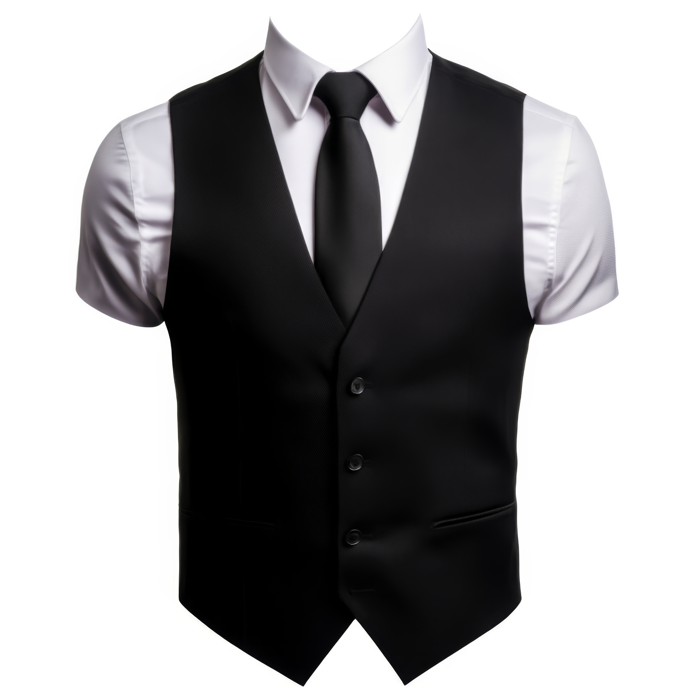
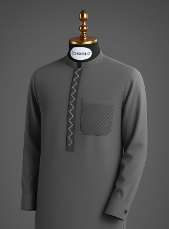
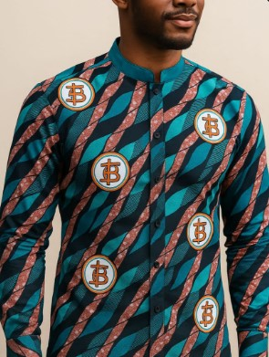
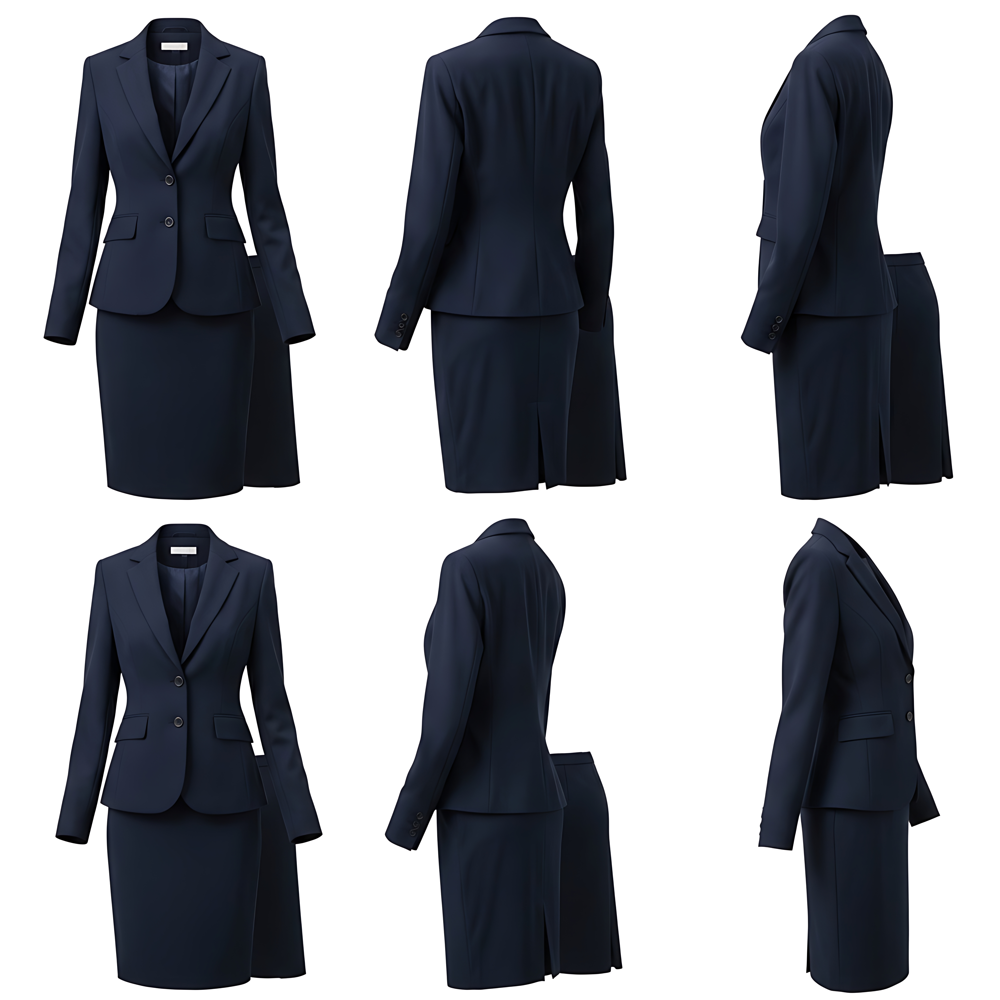
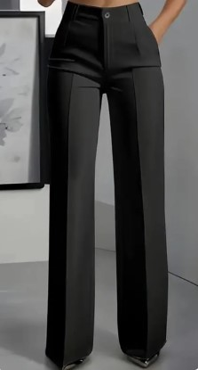
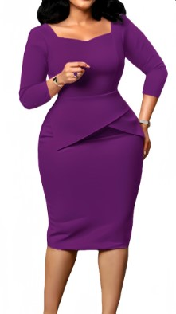
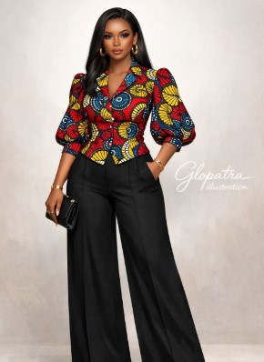
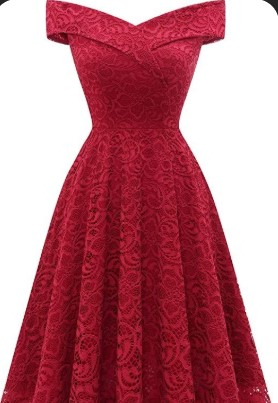
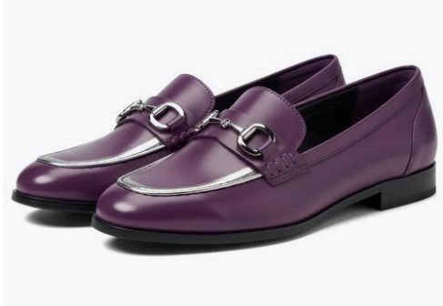
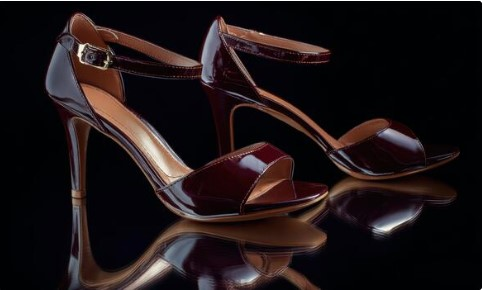

Dress Code for Men
English Dress
Accepted English corporate attire for the swearing-in ceremony.
- Buttoned down short sleeve or long sleeve dress (packing) shirt.
- Pant trousers (well-fitted, non-casual).
- Corporate suit.
- Waistcoat over a dress shirt.
- Tie or bow tie is optional but encouraged.
Examples:
Shirt without Tie
Corporate Suit
 Blazer
Blazer

Waistcoat
Corporate Trouser
 Shirt & Tie
Shirt & Tie
Native Dress
Accepted traditional Nigerian attire for the swearing-in ceremony.
- Agbada/Babariga.
- Senator/Kaftan.
- Ankara corporate style (well-tailored).
- Any well-fitted, decent native attire.
Examples:
Agbada/Babariga

Senator/Kaftan Style
Ankara CorporateFootwear
Accepted footwear for both English and native dress.
- Oxford shoes.
- Derby shoes.
- Brogues.
- Loafers.
- Dress Boots.
- Half shoes (slip-on mules).
- Sneakers & Canvas (clean, presentable).
Examples:
 Oxford/Derby
Oxford/Derby
Loafers/Brogues
Half Shoes
Canvas/Sneakers
Dress Code for Women
English Dress
Accepted English corporate attire for the swearing-in ceremony.
- Buttoned down short sleeve or long sleeve dress (packing) shirt — with or without ties, jacket or blazers.
- Chiffon top (professional style).
- Corporate skirt (knee-length or longer).
- Corporate trouser (well-fitted, non-casual).
- Corporate Gown (knee-length or longer).
- Blazer or jacket over any of the above is encouraged.
Examples:
Formal Blouse
Chiffon Top

Skirt Suit
Corporate Trouser
Corporate Gown Blazer Outfit
Blazer Outfit
Native Dress
Accepted traditional Nigerian attire for the swearing-in ceremony.
- Long Dress (well-fitted, decent).
- Ankara corporate style (well-tailored).
- Lace attire (full or partial).
- Adire corporate style.
- Any well-fitted, decent native attire.
Examples:
Native Gown

Ankara Corporate
Lace AttireFootwear
Accepted footwear for both English and native dress.
- Pump shoes.
- Loafers.
- Boots (ankle or knee-length, corporate style).
- Dressy flats.
- Heels (block, stiletto or wedge).
- Corporate covered shoes (closed-toe).
Examples:
 Pumps Heels
Pumps Heels
Corporate Boots

Loafers
Dressy Flats

Block HeelsNot Permitted
Slippers & Palm Sandals
Jeans or Shorts
Casual Wear
Indecent Appearance
Additional Notes
- All officials must be on their ID Cards.
- Slippers, Palm Sandals are not permitted.
- Jeans, shorts, or casual wear are not permitted.
- Overall appearance must reflect decency.